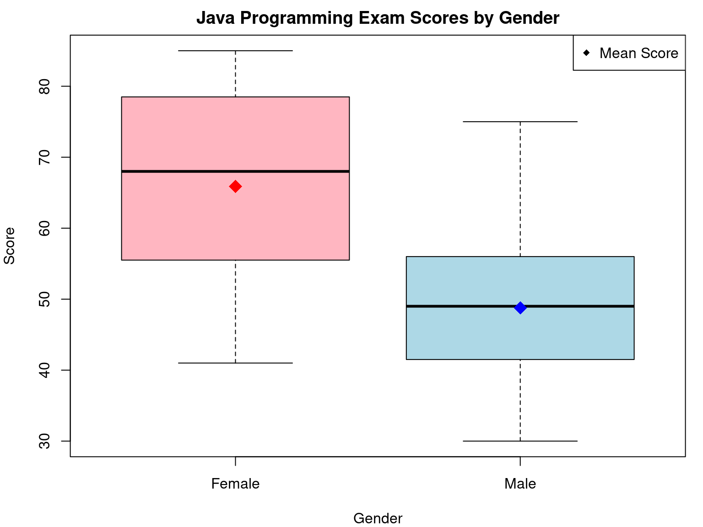

In a class of 50 students of computing, 23 are female and 27 are male. The results of their first year Java programming examination are as follows:
Females: 57, 59, 78, 79, 60, 65, 68, 71, 75, 48, 51, 55, 56, 41, 43, 44, 75, 78, 80, 81, 83, 83, 85 Males: 48, 49, 49, 30, 30, 31, 32, 35, 37, 41, 86, 42, 51, 53, 56, 42, 44, 50, 51, 65, 67, 51, 56, 58, 64, 64, 75 (a) Read these data into R by storing them in the following ways:
As two vectors, one for the females and one for the males. As one vector, with a factor vector designating the gender.
If it was discovered that the 34th was entered incorrectly and should have obtained the marks 46 instead of 86, use an appropriate editing procedure to change this.
Save the workspace in a suitable directory for access later.
Part (a): Reading Data into R First, we’ll read the data into R using the two approaches mentioned in the problem.
Approach 1: Two Separate Vectors
Code
# Create separate vectors for female and male scoresfemales <-c(57, 59, 78, 79, 60, 65, 68, 71, 75, 48, 51, 55, 56, 41, 43, 44, 75, 78, 80, 81, 83, 83, 85)males <-c(48, 49, 49, 30, 30, 31, 32, 35, 37, 41, 86, 42, 51, 53, 56, 42, 44, 50, 51, 65, 67, 51, 56, 58, 64, 64, 75)# Verify the length of each vectorcat("Number of female scores:", length(females), "\n")
Number of female scores: 23
Code
cat("Number of male scores:", length(males), "\n")
Number of male scores: 27
Approach 2: Single Vector with Factor
Code
# Create a single vector with all scoresmarks <-c(57, 59, 78, 79, 60, 65, 68, 71, 75, 48, 51, 55, 56, 41, 43, 44, 75, 78, 80, 81, 83, 83, 85, 48, 49, 49, 30, 30, 31, 32, 35, 37, 41, 86, 42, 51, 53, 56, 42, 44, 50, 51, 65, 67, 51, 56, 58, 64, 64, 75)# Create a factor for gendergender <-rep(c("Female", "Male"), c(23, 27))# Create a data frame for easier manipulationstudent_data <-data.frame(marks = marks, gender = gender)# Display the first few rows of the data framehead(student_data)
# Check the value before correctioncat("Value before correction (marks[34]):", marks[34], "\n")
Value before correction (marks[34]): 86
Code
cat("Value before correction (student_data$marks[34]):", student_data$marks[34], "\n")
Value before correction (student_data$marks[34]): 86
Code
cat("Value before correction in males vector (males[11]):", males[11], "\n")
Value before correction in males vector (males[11]): 86
Code
# Make the correctionsmarks[34] <-46student_data$marks[34] <-46males[11] <-46# This is the 11th element in males vector# Verify the changescat("Value after correction (marks[34]):", marks[34], "\n")
Value after correction (marks[34]): 46
Code
cat("Value after correction (student_data$marks[34]):", student_data$marks[34], "\n")
Value after correction (student_data$marks[34]): 46
Code
cat("Value after correction in males vector (males[11]):", males[11], "\n")
Value after correction in males vector (males[11]): 46
Code
# Show the specific row in the data framestudent_data[34,]
marks gender
34 46 Male
Part (c): Saving the Workspace
Code
# Save all objects in the current sessionsave.image("class_marks.RData")# Alternatively, save specific objectssave(females, males, marks, gender, student_data, file ="class_marks.RData")
Additional Analysis
Summary Stats
Code
# Summary statistics for female scorescat("Female summary statistics:\n")
Female summary statistics:
Code
summary(females)
Min. 1st Qu. Median Mean 3rd Qu. Max.
41.00 55.50 68.00 65.87 78.50 85.00
Code
# Summary statistics for male scorescat("\nMale summary statistics:\n")
Male summary statistics:
Code
summary(males)
Min. 1st Qu. Median Mean 3rd Qu. Max.
30.00 41.50 49.00 48.78 56.00 75.00
Code
# Create a comparison tablestats_comparison <-data.frame(Gender =c("Female", "Male"),Min =c(min(females), min(males)),Mean =c(mean(females), mean(males)),Median =c(median(females), median(males)),Max =c(max(females), max(males)))# Display the comparison tableknitr::kable(stats_comparison, digits =2, caption ="Comparison of Exam Scores by Gender")
Comparison of Exam Scores by Gender
Gender
Min
Mean
Median
Max
Female
41
65.87
68
85
Male
30
48.78
49
75
Visualization
Code
# Set margins for the plotpar(mar =c(4, 4, 2, 1)) # Bottom, left, top, right margins# Create the boxplotboxplot(marks ~ gender, data = student_data, main ="Java Programming Exam Scores by Gender",xlab ="Gender", ylab ="Score",col =c("lightpink", "lightblue"))# Add mean points to the boxplotpoints(1, mean(females), pch =18, col ="red", cex =2)points(2, mean(males), pch =18, col ="blue", cex =2)# Add a legendlegend("topright", legend ="Mean Score", pch =18, col ="black")

Conclusion
From our analysis, we can observe that female students (mean = r round(mean(females), 2)) performed better on average than male students (mean = r round(mean(males), 2)) in this Java programming examination. The boxplot shows not only the difference in central tendency but also the spread of scores within each group.